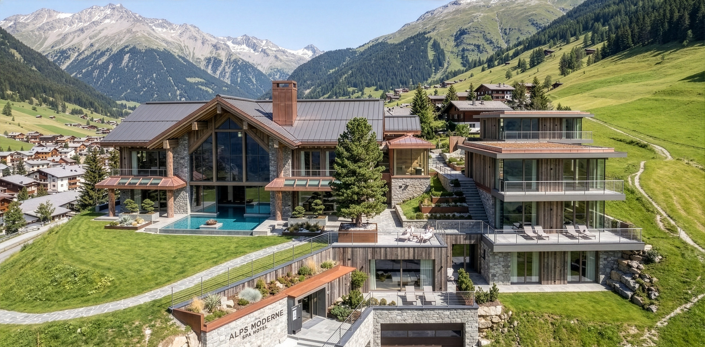
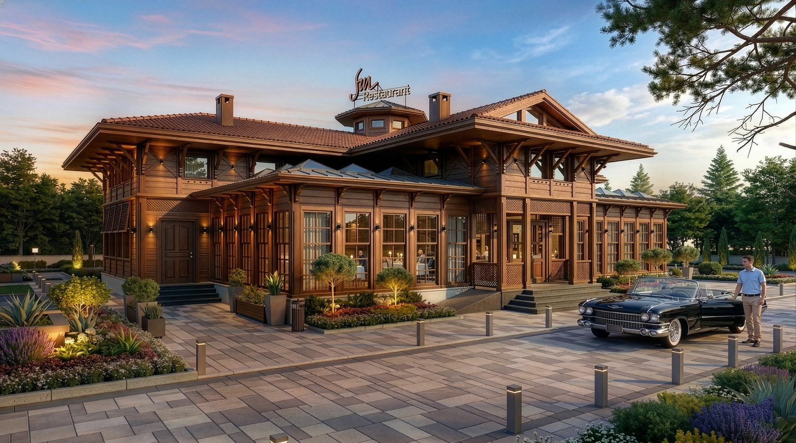
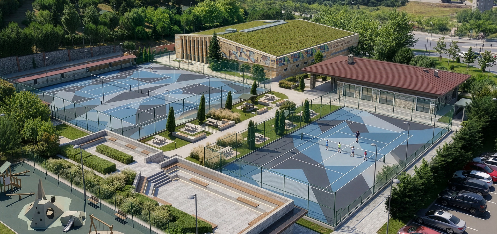
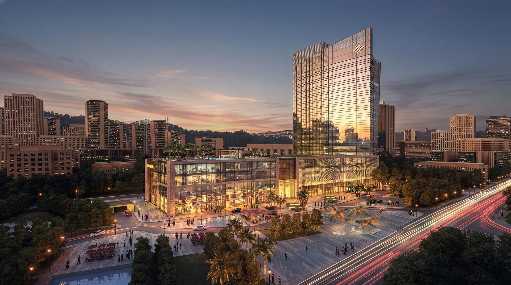
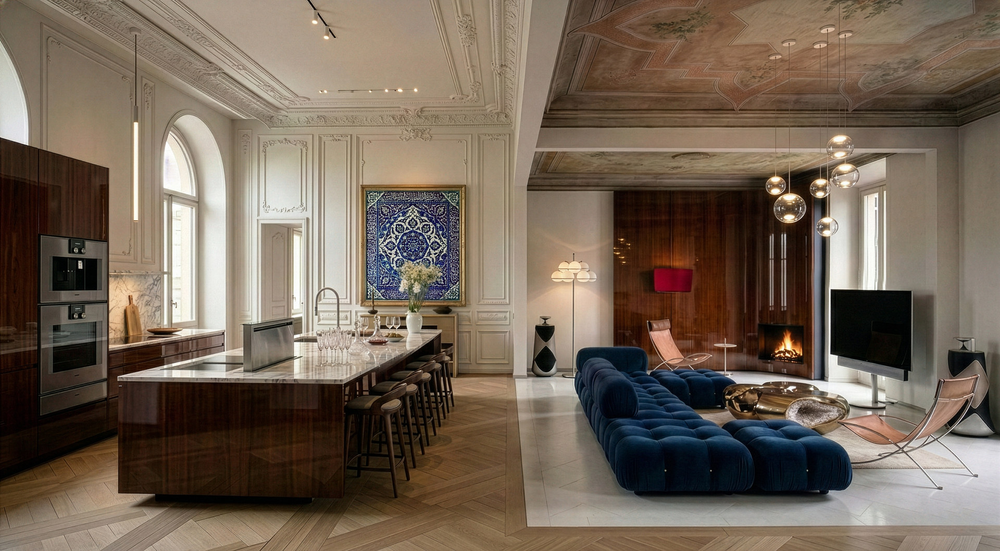
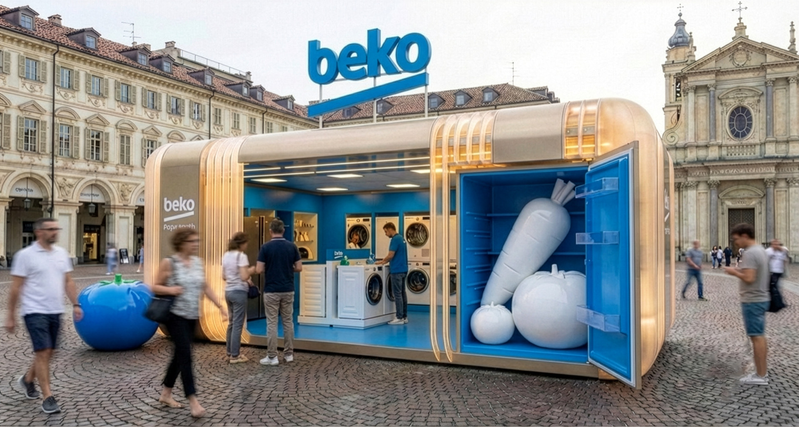
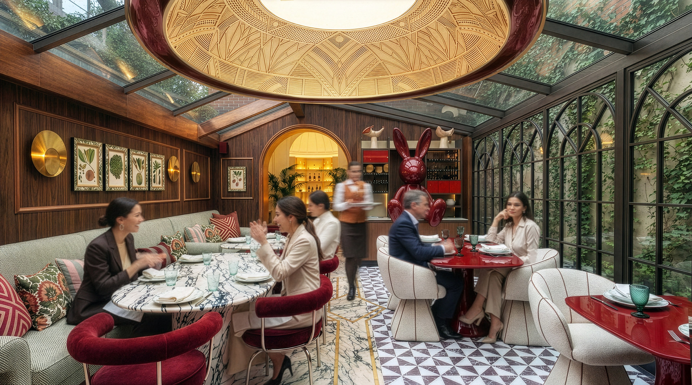
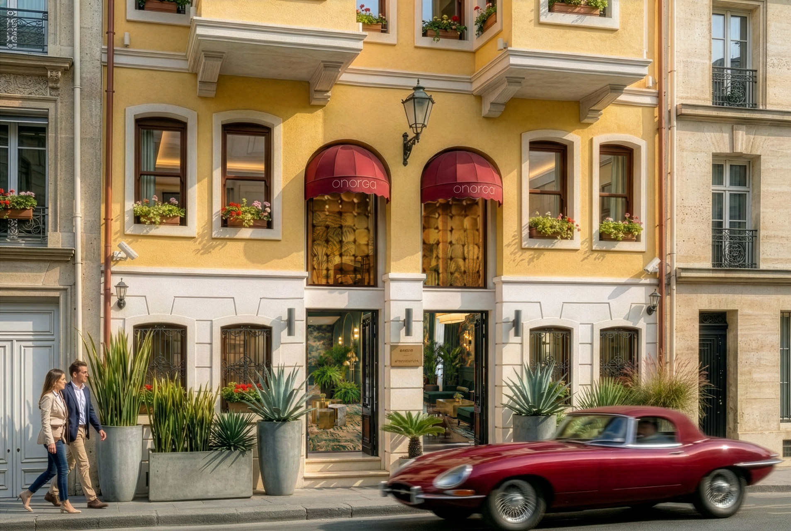
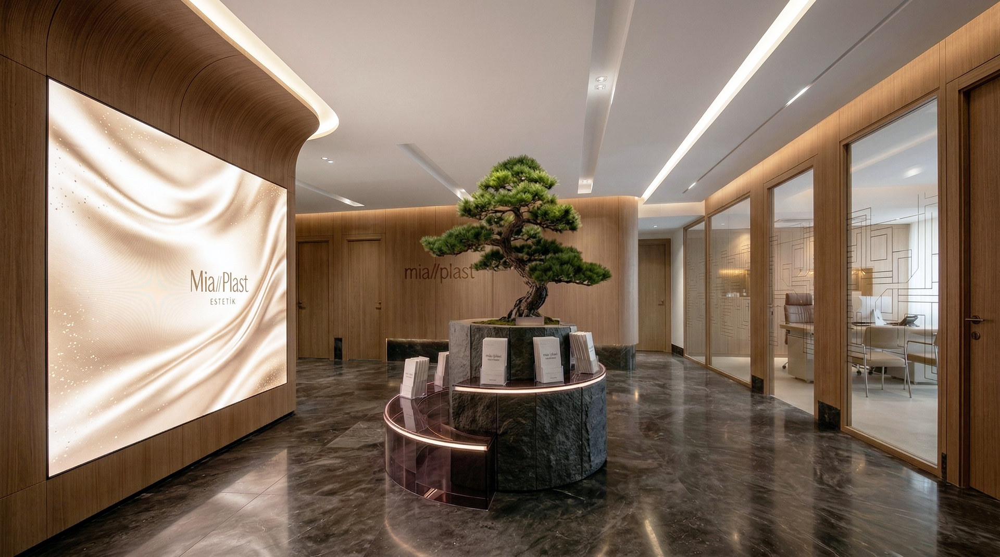

Projeler

Spa & Konaklama · Dolomitler · 2026
Alpine Wellness Sığınağı | Dolomitler
Modern mimarinin doğal dokularla kusursuz uyumu. 12,500 sqm alanda Alpler'in ruhunu elit bir bakışla yeniden yorumlayan bu konsept proje; panoramik spa alanları, bütünsel wellness felsefesi ve incelikli bir gourmet restorandan oluşuyor.

Restoran · Zeytinburnu · 2008
Sur Restaurant | Zeytinburnu
Şehrin merkezinde ahşabın ve suyun dinginliğiyle inşa edilmiş vizyoner bir kaçış. 2008'de tamamlanan bu proje, geleneksel sıcaklığı modern iç mimariyle harmanlayarak misafirlere doğayla iç içe, elit ve huzurlu bir gastronomi deneyimi sunuyor.

Spor Kompleksi · Pendik · 2019
Aydos Spor Kompleksi | Pendik
Kentsel rekreasyon alanları için elit bir standart belirleyen vizyoner proje. 2019'da tamamlanan bu kompleks; çevre bilincine sahip mimarisi, dinamik peyzajı ve modern sosyal tesisleriyle şehrin dinamizmini doğa içinde yeniden yorumluyor.

Karma Kullanımlı Kule · İstanbul · 2022
Işığın Mimari Manifestosu: Lumina Tower İstanbul
İstanbul'un kurumsal kimliğine vizyoner bir yorum getiren devasa 55,000 sqm konsept. 2022'de tasarlanan bu plaza; mimariyi sadece dikey bir yapı olarak değil, ışık, sanat ve ferahlığın merkezde olduğu yaşayan bir ekosistem olarak hayal ediyor.

Rezidans · Torino · 2026
The Alta Loft | Torino
Yüksek tavanlı loft mimarisi içinde modern minimalizm ve teknolojinin kusursuz buluşması. 2026 konsept projesi; yüksek parlaklıkta ahşap dokular, akıllı ev entegrasyonları ve heykelsi formlarla çağdaş ve elit yaşam alanlarını yeniden tanımlıyor.

Deneyimsel Perakende · Torino · 2024
Beko HarvestFresh Pop-Up | Torino
Torino'nun tarihi kalbinde global teknoloji devi Beko için tasarlanmış taşınabilir ve yenilikçi pop-up mağaza konsepti. 2024 modüler yapısı, fütüristik tasarımıyla markanın vizyonunu doğrudan sokak stiline ve kent yaşamına entegre ediyor.

Pâtisserie & Brasserie · İstanbul · 2026
The Scarlet Lepus Fişekhane | Pâtisserie & Brasserie
İstanbul'un tarihi dokusunda gerçeküstü ve Avrupa zarafetinin cüretkâr buluşması. 2026'da tasarlanan bu konsept proje; canlı kırmızı figürler ve klasik detaylarla sınırları zorlayan, deneyim odaklı bir pâtisserie-restoran vizyonu sunuyor.

Butik Otel · Beyoğlu · 2020
Ottopera Hotel | Beyoğlu
Beyoğlu'nun tarihi dokusu içinde Osmanlı zarafetini çağdaş modernizmle harmanlayan butik otel projesi. 2020'de sıfırdan inşa edilen bu yapı; Pera'nın tarihi siluetine saygı duyarken misafirlere nostaljik hatlarla bezeli çağdaş bir lüks deneyimi sunuyor.

Estetik Klinik · Nişantaşı · 2022
Mia Plast Estetik | Nişantaşı
Organik formlarla sağlık mimarisinde lüks ve dinginliğin yeniden tanımı. 2022'de tamamlanan bu proje; sıcak ahşap dokuları ve zen odaklı detaylarıyla klinik algısını yıkarken estetik mükemmelliği bütünsel bir hasta deneyimine dönüştürüyor.